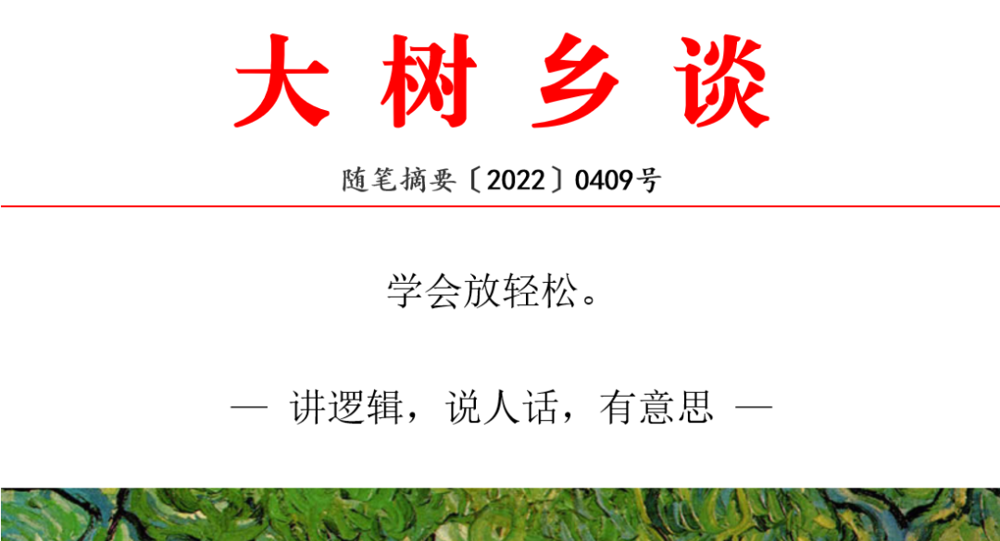

放下手机，世界更美好

最近疫情，很多人工作、生活遇到困难，甚至被迫待在家中。要说趁着有时间好好学习、练字、提高自己等等，那很不现实，就算小镇也更想去睡觉、刷手机、玩游戏，这是人之常情。
但有个问题在于：刷手机多了，看到一些相关的视频、文章、微博等等，就容易把现实中的情绪带进来，就容易比情况好的时候偏向负面，形成了恶性循环，甚至可能走极端。
昨天小镇在《要像潜艇一样藏在水下》这篇谈了网络暴力，有朋友留言问是不是敌对势力搞鬼？
小镇也没有证据证明到底是不是。但小镇更认为，与其一定找一个罪魁祸首，倒不如思考下是不是普遍出现了一些问题？
最近就有些事情，上海因为疫情原因，生活物资供应确实困难，有不少上海市民在网上求助，但是有些人强行认为这些求助的就是“敌特分子”“行走的50万”，竟然给举报了，这实在太荒谬了，颇有些不嫌事大的感觉。
生活不易、糟心事多，这手机越刷看到的东西就越窝火。看到日子过得好的，一句话就各种物资送上门就觉得贫富差距何其大，遇到有难处的就想到自己，更是不舒服，就想怼几句。
越刷越累越觉得世界不好了，有些悲剧也就出现了。
昨天提到的被网暴跳楼的女士，今天她的丈夫是这样描述的：她非常善良胆小，被网暴后像失了魂一样。我让她不要看手机了，但她那会儿就是感觉完全听不进任何声音，接受了很多精神上的压力，不然真的不会选择这一步。
要控制住自己，主动远离那些破坏自己心情、伤害自己的东西。其实放下手机，现实世界要比网络上美好的多，戾气少的多。
何必跟网络上的人争来争去呢？争吵不会让人更加舒服，只会让人情绪更加不好、更加容易走极端。
今天是周六，小镇虽然很喜欢待在家里不出门，但每天小镇都尽量活动下，恢复下元气。今天射箭2个小时，活动下久坐伏案的筋骨；又带着松子、米粒、猫粮去公园转了一圈，喂下松鼠、鸟、大猫小猫；最后转了转农贸市场，感受了下烟火气。
这种轻松的休息、适度的运动，最能增加人的能量，没必要搞得那么累。
远离紧张， 让自己轻松，也是很重要的能力。
其他文章推荐
■ 2022年中国房地产政策、房价及个人选择
如果喜欢，还请点赞、“在看”和关注吧 欢迎分享，让更多人发现“大树乡谈”